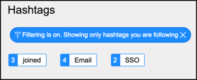
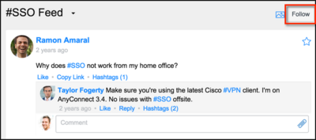

Using Hashtags in Live Feed
| |
Note: This article applies to Fuji and earlier releases. For more current information, see Use Hashtags in Live Feed at http://docs.servicenow.com
The ServiceNow Wiki is no longer being updated. Visit http://docs.servicenow.com for the latest product documentation. |
Contents
1 Overview
Hashtags are words marked with a hash symbol (#) in messages. Hashtags are a way to categorize messages by keyword or topic for improved search results. For example, to identify messages associated with VPN questions, add the hashtag #VPN in the message text.
| |
Note: Many of these features are part of live feed v2, which is available starting with the Fuji release. If you are using live feed v1, or have not activated live feed v2, see Legacy Live Feed. |
2 Tagging Messages
To tag a keyword or topic in a message, enter a # symbol before the word. A link to the hashtag is added beneath the message and all feed users can search and filter by the hashtag to find the message.
Tips for using hashtags effectively include:
- Limit the number of hashtags per message (no more than 3 is a good guideline).
- Use hashtags only in messages that are relevant to the tagged topic.
- Write a message first, and then add hashtags only if they add value. Answer the question, "What are you working on?", rather than "What hashtags apply to what you are working on?"
- Use camel case to create a hashtag that is more than one word long. For camel case, remove the space and use an uppercase letter to start each word. For example, to create a topic about the service desk, use #ServiceDesk.
{kind=link}
3 Viewing Available Hashtags
To view a list of available hashtags:
- Navigate to Social IT > Live Feed.
- Click Hashtags in the sidebar.
- Any hashtags already defined are displayed. Up to 36 hashtags can be displayed, and options are available for searching and sorting the hashtags. When searching, you do not need to include the hash symbol (#).
- 
- Click a hashtag to view all messages containing that hashtag.
{kind=link}
{kind=link}
4 Changing Hashtag Names and Merging Hashtags
Over time, users may create many hashtags with similar names, such as competitive, competitor, and competition. To combine hashtags for better searching and filtering, change the names of similar hashtags to a standard name. Administrators can restrict who can rename hashtags.
To change the name of a hashtag:
- Navigate to Social IT > Live Feed.
- Click Hashtags in the sidebar to reveal the currently defined hashtags.
- Turn off the filter to show all hashtags.
- Point to the hashtag you want to change. If you have the rights to edit hashtags, an edit tag () appears.
- Click the edit tag icon.
- Enter a new hashtag name.
- Press Enter.
- If the new name is different than the other hashtags, the new hashtag name replaces the old hashtag name on the list and in the text of any messages that include the hashtag.
- If the name is the same as one of the existing hashtags, the hashtags will be merged. For example, if you have two hashtags called Competitive and Competitors, and you change the name of Competitors to Competitive, all of the messages previously tagged Competitors are changed to Competitive and the Competitors hashtag is removed.
{kind=link}
{kind=link}
| |
Note: If a hashtag is removed from the message, renaming that hashtag does not change the message text. |
5 Adding an Image to a Hashtag
You can add an image at the domain level of already defined hashtags if you have the admin role. Images cannot be added at the conversation level. For best results, images should be restricted to 32x32 pixels and be as small as possible. SVG files can be used. After an image has been added to a hashtag, all top-level messages that use the hashtag will display the image.
To add an image to a hashtag:
- Click Hashtags in the sidebar.
- Select the appropriate hashtag.
- Do one of the following:
- To change the image, simply drag-and-drop a new image onto the old one, or click on the existing one and select a new image.
{kind=link}
{kind=link}
When you view a message that contains a hashtag with an image, that image appears in the hashtag heading bar.
{kind=link}
6 Following and Unfollowing Hashtags
You can view all postings assigned a specific hashtag by following the hashtag. You can also unfollow the hashtag if you no longer want to view those postings.
To follow a hashtag:
- Navigate to Social IT > Live Feed.
- Click Hashtags in the sidebar.
- Select the hashtag you want to follow.
- Click Follow.
- 
- A confirmation message appears.
- Click X to dismiss the message.
{kind=link}
To unfollow a hashtag, repeat the same steps and click Unfollow.
7 Bookmarking Hashtags
The live feed interface uses the standard bookmarking functionality for hashtags. You can drag-and-drop group feeds and hashtags from the Feed Summary section to the Edge for quick access.
{kind=link}
8 Removing Hashtags from Posted Messages
As a participant in a conversation, you can remove hashtags from messages that have already been posted.
To remove hashtags from posted messages:
{kind=link}
{kind=link}